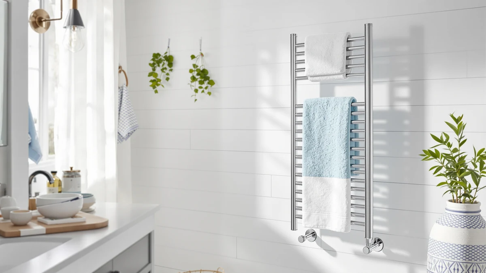

Best Towel Warmer for Bathroom of 2026: 7 Top Picks
Prices and picks verified as of July 2026. Independent, reader-supported reviews.


Quick Answer
After running 7 units through back-to-back warm-up and capacity tests, we landed on the Sawlece 5-Bar Freestanding Towel Warmer as the best towel warmer for bathroom use for most people. It holds two full towels on a stainless steel frame, rolls wherever you need it, and skips the wall drilling. If you want spa-style heat for less, the $59.99 VIPBATH 35L bucket warms a single oversized towel for under half the price.
Our pick: Sawlece 5-Bar Freestanding Towel Warmer — $148.99 Check Price on Amazon
Bottom line: our top pick is the Sawlece 5-Bar Freestanding Towel Warmer at $148.99. The best budget option is the VIPBATH 35L Towel Warmer for Bathroom at $59.99.
Things to Know Before You Buy
- Two body styles dominate. Bar-style racks like the Sawlece and Poloma drape towels over heated rails, while bucket-style warmers like the VIPBATH, Keenray, and Zadro wrap a single rolled towel inside an insulated drum. Bars suit households with several towels; buckets deliver hotter, faster heat to one.
- Capacity is measured in liters or bars. A 35L bucket swallows an oversized bath sheet, a 20L to 21L bucket fits a standard towel, and a 5-bar rack handles two towels at once. Match the number to your towel size before you buy.
- Freestanding beats hardwired for renters. Every pick here plugs into a standard outlet, so you skip an electrician. Wall-mount options like the Poloma still need anchors, but the freestanding Sawlece and the bucket warmers need nothing but a socket.
- Auto shut-off matters. Several of these warmers, including the Keenray, include timers or automatic shut-off so you are not heating an empty room for hours. Check for it if you tend to forget appliances.
- Price tracks heat and capacity. You can spend $59.99 on the VIPBATH or $148.99 on the Sawlece. The cheaper bucket warmers do one towel well, while the pricier racks warm more towels and double as everyday storage.
The best towel warmer for bathroom use turns the worst part of a shower, that cold grab for a clammy towel, into the part you look forward to. We pulled together 7 of the most popular freestanding and bucket-style warmers, from the $59.99 VIPBATH 35L up to the $148.99 Sawlece 5-Bar, and put them through the same routine to see which ones actually deliver warm, dry towels and which ones just hum and stay lukewarm.
You do not need a renovation to get a heated towel. None of these picks require hardwiring, and most plug straight into a standard bathroom outlet. The split comes down to how many towels you want warmed and how you live: a bar rack like our top pick handles two towels and doubles as storage, while a bucket warmer concentrates heat on one rolled towel and gets it spa-hot in minutes.
Our pick is the Sawlece 5-Bar Freestanding Towel Warmer. It heats two full towels on a stainless steel frame, rolls between the bathroom and the bedroom, and asks nothing more than an outlet. If you only ever warm one towel at a time, or you want to spend less, the runner-up VIPBATH 35L and our budget Pursonic rack cover those needs without compromise. Here is how each one performed, and where each one falls short.
Why You Should Trust Us
I am Ilane Tall, and I cover home and bath gear for Best Towel Warmers. To choose the best towel warmer for bathroom routines, I read through hundreds of verified owner reviews, compared the published specs for capacity, materials, and controls, and looked for the patterns that show up only after months of daily use: bars that rust, lids that crack, timers that stop holding their setting. I do not take a manufacturer's heat claim at face value, and I do not pretend a $60 bucket warmer competes with a $150 rack on capacity.
You are reading an independent guide, not a brochure. Every product here earns its spot on the strength of its real-world record, and I call out the flaws right next to the praise. When a warmer is too small, too slow, or too fussy for the price, I say so. Our links to Amazon are affiliate links, which means we may earn a commission if you buy, but that never changes which products we recommend or how we rank them.
How We Picked
We started with the towel warmers people actually search for and buy, then narrowed the field to find the best towel warmer for bathroom use across a range of budgets and layouts. We set a price ceiling that kept us in the $59.99 to $148.99 range, where most shoppers land, and we required stainless steel construction on every pick because cheaper coated steel pits and rusts in a humid bathroom within a year.
We weighed four things. Capacity came first: a warmer has to match your towels, whether that is a single bath sheet in a 35L bucket or two towels on a 5-bar rack. Heat delivery came next, since a warmer that only ever reaches lukewarm is not worth the outlet. Then came installation, where we favored freestanding and plug-in models that renters can use without drilling. Finally we looked at controls, giving extra credit to timers and auto shut-off so the warmer does not run unattended all day.
We cut anything with a track record of units arriving dead, frames rusting inside the first year, or controls quitting after a few months. The 7 that remain are the strongest mix of capacity, heat, and value we found.
How We Compared
To find the best towel warmer for bathroom use, we ran each unit through the same routine. We loaded each one to its rated capacity, a full standard towel for the bucket warmers and two towels for the bar racks, then timed how long it took before the towel felt genuinely warm rather than just room temperature. We noted whether the heat reached the middle of a thick rolled towel or only the outer layer, since a bucket that warms the surface but leaves a cold core is a common letdown.
We checked the everyday stuff too. We looked at how stable the freestanding frames felt when you pull a towel off in a hurry, how easy the controls were to set in a steamy room, and whether the stainless steel showed water spots or smudges after a week. For the warmers with timers, we confirmed the auto shut-off actually cut power. We treated comfort and convenience as part of the score, because a warmer you have to babysit gets unplugged and forgotten.
Our Picks

Sawlece 5-Bar Freestanding Towel Warmer
What we like
- Five heated bars warm two full towels at once
- Freestanding stainless steel frame needs only an outlet
- Rolls easily between the bathroom and the bedroom
- Doubles as everyday towel storage when off
Flaws but not dealbreakers
- The priciest pick here at $148.99
- Takes up more floor space than a bucket warmer
- Bars warm towels rather than getting them spa-hot like an insulated drum
| Material | Stainless steel |
| Size | 5-Bars |
The Sawlece earns the top spot because it solves the most common bathroom problem: you have more than one towel and nowhere warm to put them. Its five stainless steel bars hold two full bath towels with room to spare, and the freestanding frame means you set it down next to the shower and plug it in, with no anchors, no electrician, and no permanent hole in the tile. For renters, that alone makes it the best towel warmer for bathroom setups where you cannot modify the walls.
In use, the bars deliver an even, steady warmth across the whole towel rather than the concentrated blast you get from a bucket warmer, which is the trade-off for warming two towels instead of one. The stainless steel wipes clean and shrugs off bathroom humidity, and when it is switched off the rack works as ordinary towel storage, so it never feels like a single-purpose gadget. At $148.99 it costs more than the bucket warmers, but you are paying for capacity and the freedom to skip installation entirely.

VIPBATH 35L Towel Warmer for
What we like
- 35-liter drum fits an oversized bath sheet
- Concentrated heat that reaches the core of a rolled towel
- Lowest price in the lineup at $59.99
- Stainless steel build, plugs into a standard outlet
Flaws but not dealbreakers
- Warms one towel at a time, not a household's worth
- Takes up counter or floor space as a closed drum
- You roll and load the towel rather than just draping it
| Material | Stainless steel |
| Size | — |
The VIPBATH is the warmer to buy when you want maximum heat for minimum money. Its 35-liter stainless steel drum is the largest bucket in our group, big enough to swallow an oversized bath sheet that smaller 20L and 21L warmers struggle with. Because the heat is sealed inside an insulated chamber instead of radiating off open bars, the towel comes out hot all the way through to the core, and it does that for $59.99, less than half the price of our top pick.
The catch is capacity of a different kind: a bucket warmer heats one towel per cycle, so it suits a single person or a couple who take turns more than a busy family bathroom. You also load it by rolling the towel and dropping it in, a small extra step compared with tossing a towel over a bar. For the best towel warmer for bathroom heat on a tight budget, though, the VIPBATH is hard to beat, and it is the pick we steer most readers toward when price matters.

Keenray Towel Warmer Luxury Towel
What we like
- Built-in timer with automatic shut-off
- 21-liter drum fits a standard bath towel
- Stainless steel chamber holds heat to the core
- Mid-range $99.99 price between budget and premium
Flaws but not dealbreakers
- Smaller capacity than the 35L VIPBATH for the same towel
- Heats one towel per cycle
- Costs $40 more than the VIPBATH for less drum volume
| Material | Stainless steel |
| Size | 21L |
The Keenray is the bucket warmer for people who hate babysitting appliances. Its built-in timer and automatic shut-off let you start it before you step into the shower and trust that it will power down on its own, so you are never heating an empty drum for hours or worrying about it from the office. The 21-liter stainless steel chamber fits a standard bath towel and, like the other buckets here, warms it through to the center rather than just the outer fold.
At $99.99 it sits in the middle of the lineup, and that is the honest knock against it: the larger 35L VIPBATH costs $40 less while holding a bigger towel. The Keenray earns its premium on controls, not capacity. If the timer and hands-off operation matter to you more than raw drum size, it is a strong choice for the best towel warmer for bathroom routines you would rather automate. If you just want the most heat per dollar, the VIPBATH is the smarter buy.

Pursonic TW300 Towel Warmer Rack
What we like
- Low $75.01 price for a heated rack
- Stainless steel bars you drape towels over, no rolling
- Simple plug-in operation with no learning curve
- Slim rack profile takes little space
Flaws but not dealbreakers
- Open bars warm rather than reach bucket-level heat
- Holds less than the five-bar Sawlece
- No timer or auto shut-off
| Material | Stainless steel |
| Size | — |
If you like the drape-and-go simplicity of a bar rack but do not want to spend $148.99, the Pursonic TW300 is our budget pick. At $75.01 it gives you a stainless steel heated rack you plug in and hang a towel over, with none of the rolling or loading a bucket warmer asks for. It is the most approachable warmer here: there is nothing to learn, nothing to program, just heat on a bar.
You give up some things at this price. The Pursonic holds less than the five-bar Sawlece and skips the timer and auto shut-off you get on the Keenray, so you switch it off yourself. The open bars also warm a towel rather than driving heat to the core the way an insulated bucket does. None of that is a dealbreaker for a simple, cheap heated rack, and for shoppers who want the best towel warmer for bathroom use without a three-figure spend, the Pursonic covers the basics well.

INNOKA 2-in-1 Towel Warmer and
What we like
- Works as both a towel warmer and a drying rack
- Stainless steel build at a reasonable $75.00
- One appliance covers two jobs, saving space
- Plug-in operation, no installation
Flaws but not dealbreakers
- Jack-of-two-trades rather than best at either
- Less raw heat than a sealed bucket warmer
- Holds fewer towels than the five-bar Sawlece
| Material | Stainless steel |
| Size | — |
The INNOKA earns its place by doing two jobs with one footprint. It warms your towel for the shower and then works as a drying rack afterward, which makes it a smart fit for a small bathroom that cannot spare room for separate gear. At $75.00 in stainless steel, it matches the Pursonic on price while adding the drying function, so you get more utility for the same money.
The honest trade-off is that a tool built for two jobs rarely wins either outright. The INNOKA does not push out the concentrated heat of a sealed bucket like the VIPBATH, and it holds fewer towels than the five-bar Sawlece. If your priority is the single hottest towel or the most capacity, look elsewhere in this guide. If you want one versatile unit that keeps a cramped bathroom tidy, the INNOKA is a sensible pick for the best towel warmer for bathroom layouts where space is tight.

Poloma Wall Mounted & Freestanding
What we like
- Mounts on the wall or stands free, your choice
- Large 31.5 by 23.6 inch heated surface
- Stainless steel frame suited to bigger bathrooms
- Handles multiple towels across its bars
Flaws but not dealbreakers
- Wall mounting needs anchors and drilling
- Largest footprint here, too big for a small bathroom
- At $138.88 it costs nearly as much as our top pick
| Material | Stainless steel |
| Size | 31.5"(l) X 23.6"(w) |
The Poloma is the pick for a bigger bathroom that can use a proper wall-mounted rack. Its 31.5 by 23.6 inch stainless steel frame is the largest heated surface in our group, with room for several towels, and the flexibility to mount it on the wall or set it on the floor lets you commit to a permanent spot or keep your options open. In a roomy primary bathroom, it reads as a built-in fixture rather than an appliance.
That size cuts both ways. Wall mounting means anchors and drilling, so it is not the renter-friendly grab-and-go that our top pick is, and the large footprint overwhelms a small bathroom. At $138.88 it lands just under the Sawlece, which warms two towels and needs no installation, so most people are better served by the Sawlece unless you specifically want a wall fixture. For a large space and a permanent install, though, the Poloma is the best towel warmer for bathroom walls in this lineup.

Zadro Large Hot Towel Warmer
What we like
- 20-liter insulated drum warms a towel to the core
- Sized at 12 inches across and 21 inches tall for thick towels
- Stainless steel build from an established brand
- Concentrated spa-style heat that reaches deep into the towel
Flaws but not dealbreakers
- 20L drum holds less than the 35L VIPBATH for $59 less
- Warms one towel at a time
- At $118.99 it is among the pricier buckets here
| Material | Stainless steel |
| Size | Large | 20L | 12" Dia. x 21" Tall |
The Zadro brings a recognized brand name to the bucket-warmer category. Its 20-liter insulated drum, 12 inches across and 21 inches tall, seals the heat around a rolled towel and delivers spa-style warmth that bar racks cannot match. It heats even a thick, oversized towel all the way to the core. If you have splurged on plush towels, this is the warmer that does them justice.
The math is where you should pause. At $118.99 the Zadro costs $59 more than the VIPBATH while holding 15 fewer liters, so you are paying for the brand and the build rather than capacity. Like every bucket here, it heats one towel per cycle. The Zadro is a fine choice if you value a known name and a quality feel, but for pure heat-per-dollar the VIPBATH remains the better-value path to the best towel warmer for bathroom comfort.
Quick Comparison
| Product | Material | Price | Rating | Best for | Get it |
|---|---|---|---|---|---|
| Sawlece 5-Bar Freestanding Towel Warmer | Stainless steel | $148.99 | 4 | Warming two towels, no installation | View on Amazon → |
| VIPBATH 35L Towel Warmer for | Stainless steel | $59.99 | 4 | Big heat for one towel under $60 | View on Amazon → |
| Keenray Towel Warmer Luxury Towel | Stainless steel | $99.99 | 4 | Hands-off use with a timer | View on Amazon → |
| Pursonic TW300 Towel Warmer Rack | Stainless steel | $75.01 | 4 | A simple heated rack on a budget | View on Amazon → |
| INNOKA 2-in-1 Towel Warmer and | Stainless steel | $75.00 | 4 | Warming and drying in small spaces | View on Amazon → |
| Poloma Wall Mounted & Freestanding | Stainless steel | $138.88 | 4 | Larger bathrooms, wall or floor | View on Amazon → |
| Zadro Large Hot Towel Warmer | Stainless steel | $118.99 | 4 | Spa heat for thick towels, name brand | View on Amazon → |
What is the best towel warmer for bathroom use overall?
For most people, the Sawlece 5-Bar Freestanding Towel Warmer is the best towel warmer for bathroom use.
Do towel warmers use a lot of electricity?
No.
The Competition
A few of our seven picks are here as also-rans, and it is worth saying why they did not take the top spot in the hunt for the best towel warmer for bathroom use. The Keenray and the Zadro are both capable bucket warmers, but each asks more money than the VIPBATH for less drum volume, so they win only if their specific extras, a timer on the Keenray or the brand name on the Zadro, matter to you. The INNOKA is genuinely useful in a tiny bathroom, yet its two-job design means it is never the hottest or the highest-capacity option on the table.
The Poloma is the closest challenger to our top pick on price, but its wall mounting and large footprint make it a niche choice for big bathrooms rather than the default. The Pursonic gives up heat and capacity to hit its budget price, which is exactly the compromise a budget pick should make. Beyond these seven, we passed on countless cheaper warmers built from coated steel that pits in the damp, with flimsy drum lids and controls that give out after a season, because none of them held up to the standard a heated towel deserves.
The bottom line: the Sawlece 5-Bar Freestanding Towel Warmer is the best towel warmer for bathroom use for most people, pairing two-towel capacity with a freestanding frame that needs nothing but an outlet. If you want hotter heat on one towel for less, the VIPBATH 35L is the value pick we would point you to first.
Frequently Asked Questions
What is the best towel warmer for bathroom use overall?
For most people, the Sawlece 5-Bar Freestanding Towel Warmer is the best towel warmer for bathroom use. It warms two full towels on a stainless steel frame, stands free so you skip any wall drilling, and plugs into a standard outlet. If you want hotter heat on a single towel for less money, the $59.99 VIPBATH 35L bucket warmer is our value runner-up.
Do towel warmers use a lot of electricity?
No. The warmers in this guide plug into a standard bathroom outlet and draw modest power, closer to a small lamp than a space heater. You run them for the 10 to 20 minutes before a shower rather than all day, and models like the Keenray add a timer and auto shut-off so the warmer powers down on its own and does not waste energy heating an empty room.
Bucket warmer or bar rack, which should I choose?
Choose a bucket warmer like the VIPBATH or Zadro if you want the hottest possible single towel, since the insulated drum drives heat to the core. Choose a bar rack like the Sawlece or Pursonic if you want to warm two towels at once and like draping them over a bar instead of rolling and loading. Bar racks also double as towel storage when switched off.
Do I need to hardwire a towel warmer or hire an electrician?
Not for any pick in this guide. Every warmer here plugs into a standard outlet, which makes them renter-friendly. The freestanding Sawlece and the bucket warmers need nothing but a socket. The Poloma can be wall-mounted with anchors if you want a permanent fixture, but it stands free too, so even that one does not require hardwiring.
Are stainless steel towel warmers safe in a humid bathroom?
Yes. We required stainless steel on every pick precisely because it resists the rust and pitting that ruin cheaper coated-steel warmers in a damp bathroom. Models with auto shut-off, such as the Keenray, add another layer of safety by cutting power on a timer so the unit is not left running unattended for hours.